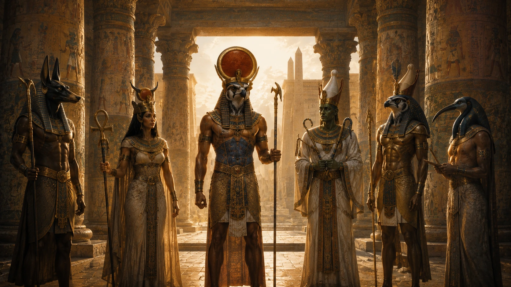
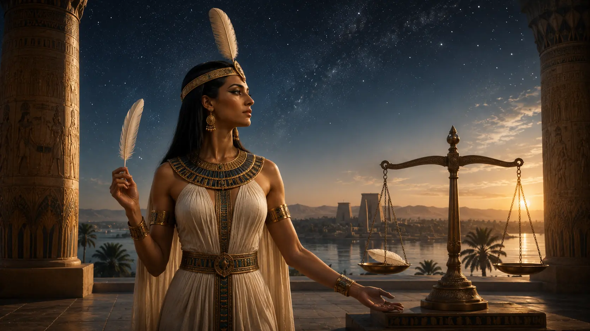
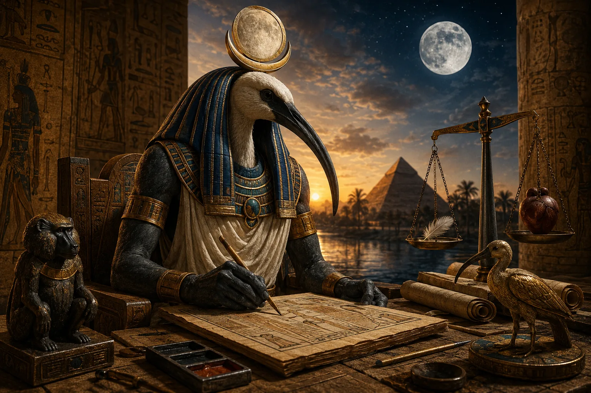
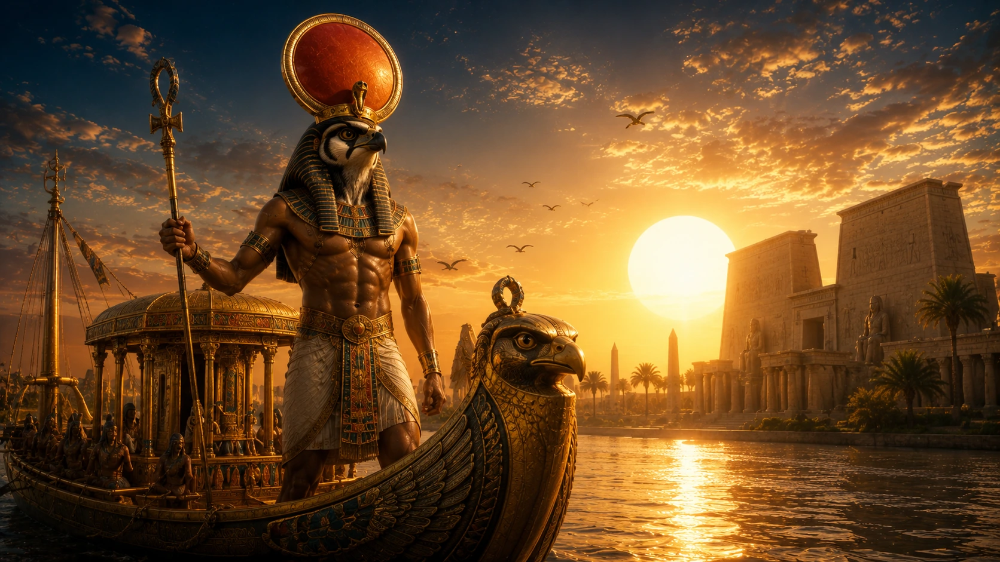
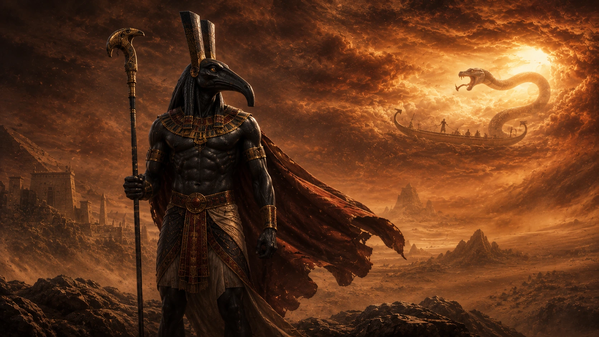

Antik Mısır Tanrıları: En Güçlü Tanrılar, Görevleri ve Mısır Mitolojisinin İlahi Dünyası
Ra, Osiris, Horus, İsis, Anubis, Thoth, Set, Hathor ve Bastet. Antik Mısır'ın en önemli tanrılarının görevleri, hikayeleri ve birbirleriyle ilişkileri.
Antik Mısır'ın gizemli tanrıları, ölümsüz efsaneleri ve derin dini inançları. Ra'dan Osiris'e, Anubis'ten İsis'e kadar binlerce yıllık Mısır mitolojisini keşfedin.

Ra, Osiris, Horus, İsis, Anubis, Thoth, Set, Hathor ve Bastet. Antik Mısır'ın en önemli tanrılarının görevleri, hikayeleri ve birbirleriyle ilişkileri.

Maat'ın kökeni, devekuşu tüyü sembolü, kalbin tartılması törenindeki rolü ve Mısır uygarlığının temel değerlerindeki yeri.

İbis başlı tanrı Thoth'un kökeni, hiyerogliflerin mucidi olarak rolü, Maat ile ilişkisi ve ölüler diyarındaki görevleri.

Hathor'un inek boynuzlu görünümü, müzikle ilişkisi, Ra ile bağlantısı ve ölümden sonraki yaşamdaki koruyucu rolü.

Bastet'in kökeni, kedilerle ilişkisi, Sekhmet ile bağlantısı, Bubastis festivalleri ve halk arasındaki popülerliği.

İsis'in güçlü büyü yetenekleri, Osiris'i diriltme hikayesi, Horus'u koruma rolü ve tüm Mısır'a yayılan kültü.

Güneş tanrısı Ra'nın gündüz ve gece yolculuğu, diğer tanrılarla birleşmesi ve Mısır kozmolojisindeki merkezi rolü.

Şahin başlı tanrı Horus'un kökeni, Set ile mücadelesi, firavunların koruyucusu olarak rolü ve Mısır mitolojisindeki önemi.

Set'in karmaşık karakteri, Osiris'i öldürmesi, Horus ile savaşı ve Mısır mitolojisindeki "kötü" tanrı imgesinin gerçeği.

Çakal başlı tanrı Anubis'in kökenleri, mumyalama ile ilişkisi ve ölüler dünyasındaki görevleri.

Osiris'in hikayesi, Set tarafından öldürülmesi, İsis'in arayışı ve yeniden doğuş efsanesi.

Antik Mısır'ın ölüm sonrası yolculuğunu anlatan kutsal metinler, büyüler ve öte dünya rehberi.

Antik Mısırlıların ölüm sonrası hayata olan inançları, ruhun yolculuğu ve cennet anlayışları.